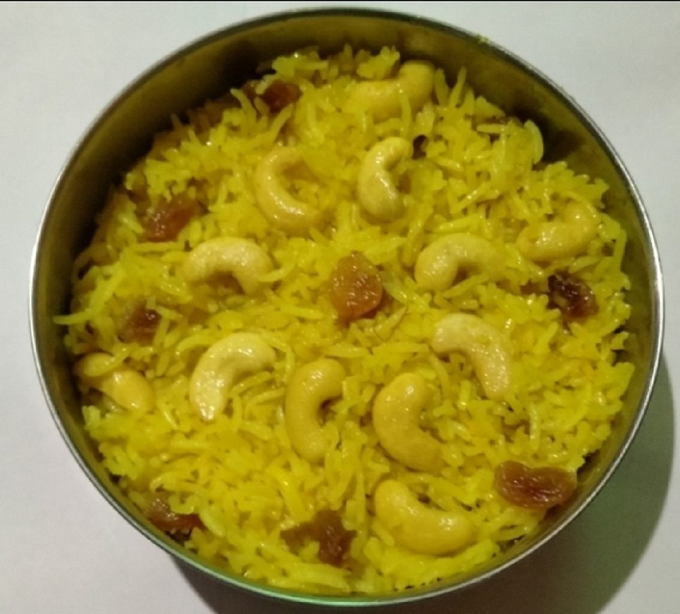

Contains: milk, tree nuts
Checked against the ingredient list for ten allergens: milk, egg, fish, crustaceans, tree nuts, peanuts, sesame, mustard, soy and gluten. Brands vary, so read the label on anything new to you.
Ingredients
Quantities for 4.
- 300g, rinsed and soaked 30 minutes Basmati Rice
- 5 tbsp Ghee
- 250ml full-fat Milk
- 350ml Water
- 120g Sugar
- a generous pinch, soaked in 2 tbsp warm milk Saffron
- 5 green, bruised Cardamom
- 1 stick, 5cm Cinnamon
- 3 Cloves
- 1 Bay Leaf
- 15, blanched and slivered Almonds
- 12, halved Cashew
- 2 tbsp Raisins
- 6, slivered Dried ApricotKashmiri apricots if you have themoptional
- 1/4 tsp Saltsounds wrong in a sweet dish; it is what stops it tasting flat
Cookware
stovetop
Before you start
- Soak the rice 30 minutes and drain it well in a sieve for another 10. Wet grains steam into a clump instead of staying separate.
- Soak the saffron in warm, not hot, milk for at least 20 minutes so the colour comes out fully.
- Have the nuts fried and set aside before the rice goes in; the last stage moves quickly.
Method
- Heat 3 tbsp of the ghee and fry the almonds and cashews until pale gold, about 90 seconds, then lift them out.
- Fry the raisins in the same ghee for 15 seconds, until they puff up, and lift them out too.Fifteen seconds is the whole window. Raisins go from plump to bitter and black very fast.
- Add the remaining ghee, then the cinnamon, cloves, cardamom and bay leaf, and let them scent the fat for 30 seconds.
- Tip in the drained rice and turn it gently for 2 minutes, until every grain is coated and looks glassy at the edges.Use a flat spatula and fold rather than stir; broken grains turn the pulav sticky.
- Pour in the water, milk, salt and the saffron milk, and bring to a boil.
- As soon as it boils, lower the flame to its minimum, cover tightly and cook 12 minutes without lifting the lid.
- Uncover, scatter over the sugar, fried nuts, raisins and apricot, and fold through with two strokes.Sugar goes in only after the rice is cooked. Add it earlier and the grains stay hard.
- Cover again and leave on the lowest heat for 5 minutes, then rest off the heat for 10 before serving warm.
Storage
Keeps 2 days refrigerated. Reheat covered with a sprinkle of water, or steam for 5 minutes; a microwave dries the grains out.
Nutrition Low estimate
Low protein: 9+ g a serving, 6% of the calories
| Per serving203 g | Per 100 g | |
|---|---|---|
| Calories | 631+ kcal | 311+ kcal |
| Protein | 8.8+ g | 4+ g |
| Carbohydrate | 103.3+ g | 51+ g |
| of which sugars | 41.2+ g | 20+ g |
| Fibre | 2.2+ g | 1+ g |
| Fat | 20.8+ g | 10+ g |
| of which saturated | 11.4+ g | 6+ g |
| of which unsaturated | 8.1+ g | 4+ g |
The + means ingredients given to taste rather than by weight are counted as zero, so the true figure is a little higher than shown. A rough guide only. A large part of this ingredient list is given to taste rather than by weight, or much of what is weighed is not eaten. Ingredients given to taste rather than by weight are counted as zero, so the real figure is a little higher than this. The + says so. Estimated from raw ingredients using USDA FoodData Central. Cooking changes are not modelled, and added salt is excluded, so sodium is not given.
Written and checked against sources, not cooked in a test kitchen. Times, yields, allergens and nutrition are worked out rather than measured, so use your own judgement on doneness and on storing. More in About.